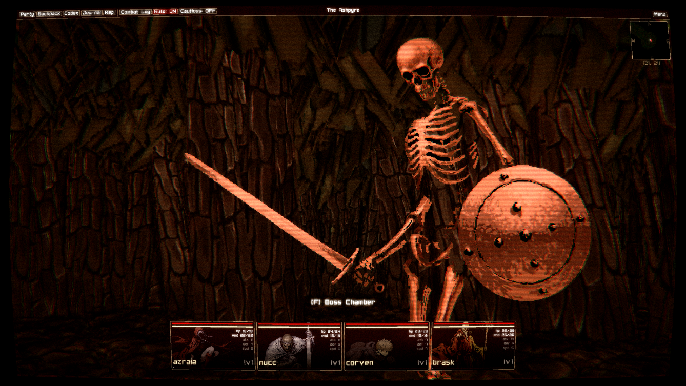
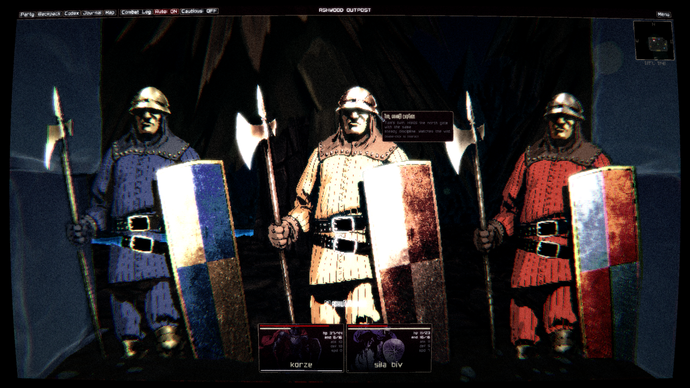
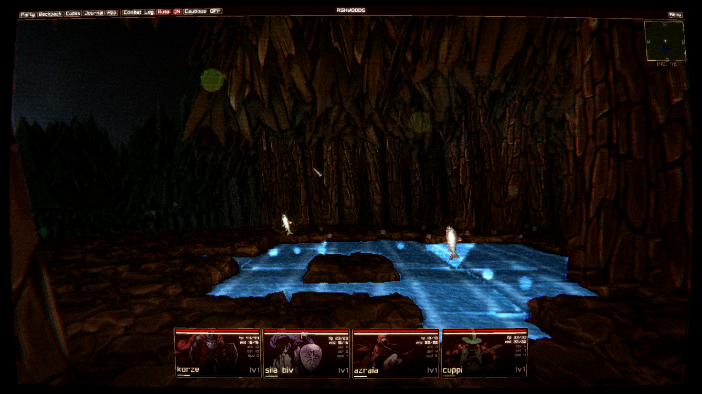
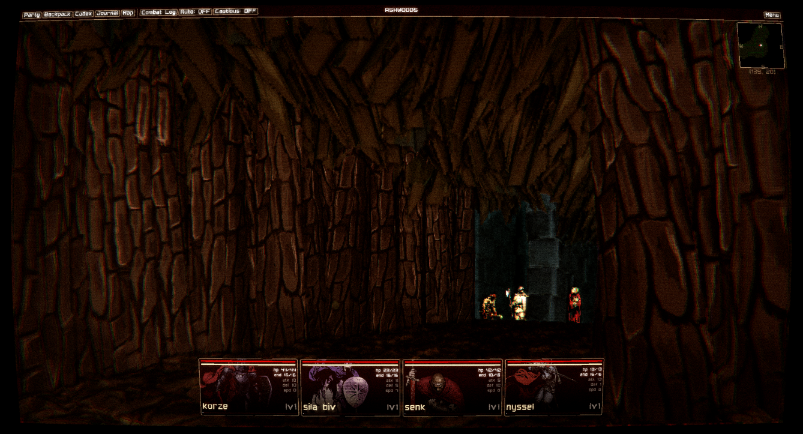
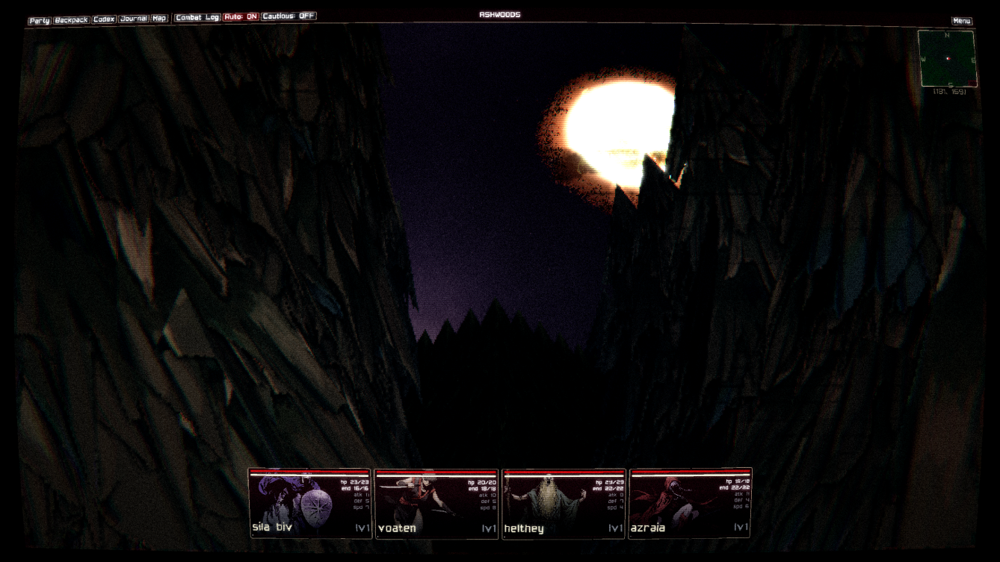
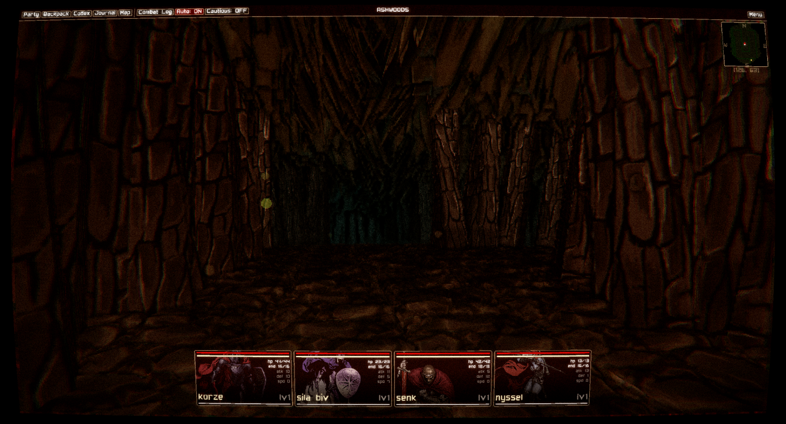
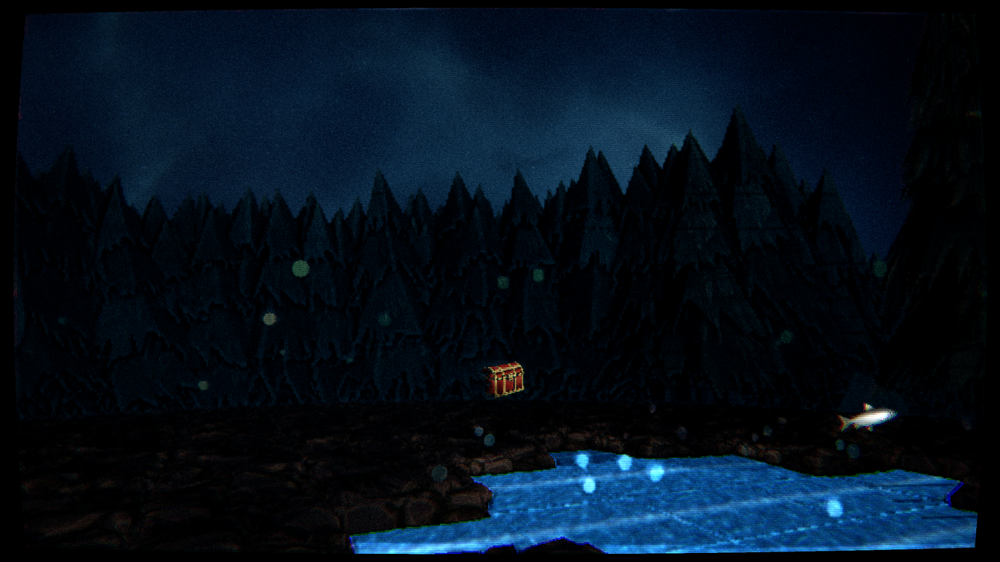
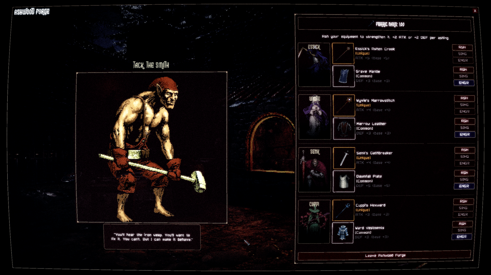
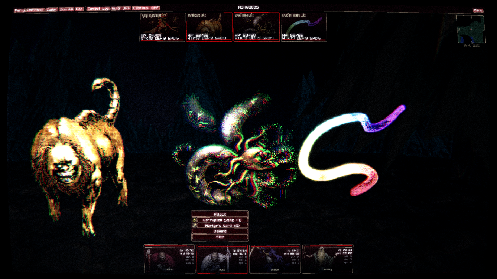
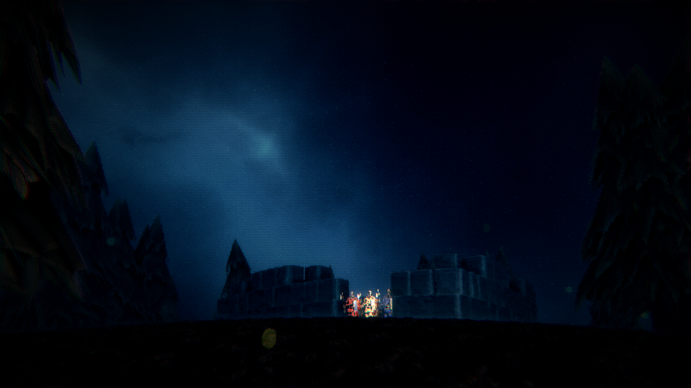
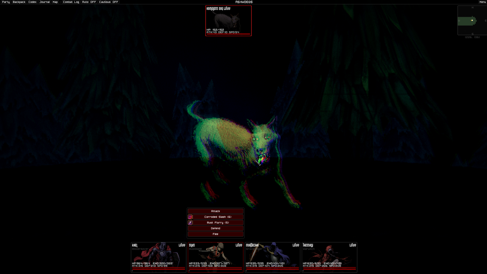
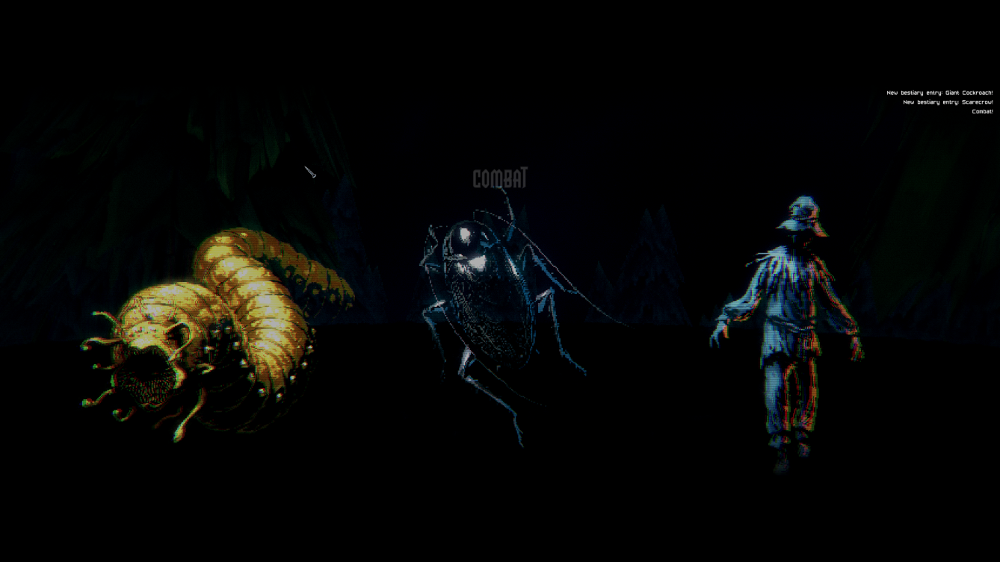

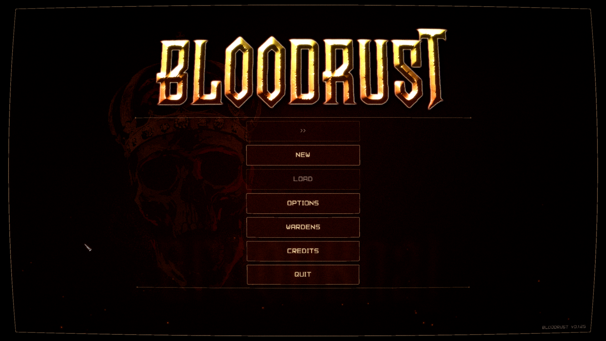
Pre-Alpha
Minimalist Dungeon Crawler
Old-school first-person dungeon crawler. We're stripping away the bloat of modern RPGs. No endless skill trees, no inventory management mini-games, no 40-hour tutorial. Just you, your party, and a dungeon that wants you dead. Lead the Ferric Wardens into the Ashwoods and clear the Blood Rust.
Features
Grid movement
Step-by-step dungeon crawling.
Party system
Four characters, distinct roles.
Active combat
Real-time fights. Resources are tight.
One dungeon
The Ashwoods. One map, one goal.
Tech Specs
Engine
Spectre Engine (C)
Mode
Single-Player
Platform
PC (more TBA)
Playthroughs
One and done
Status
In Development